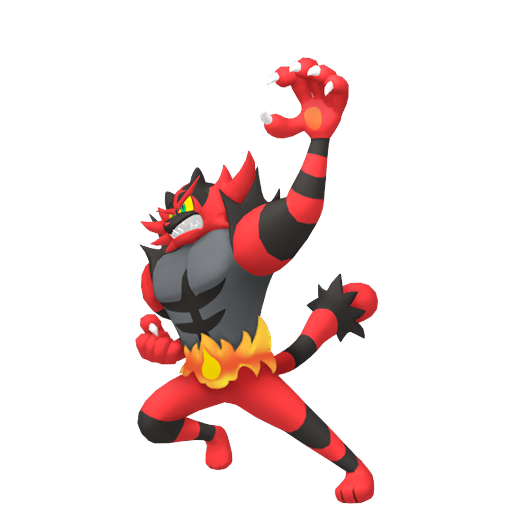
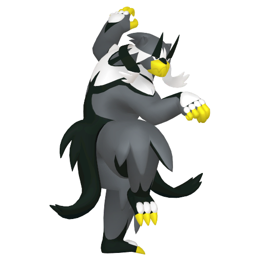
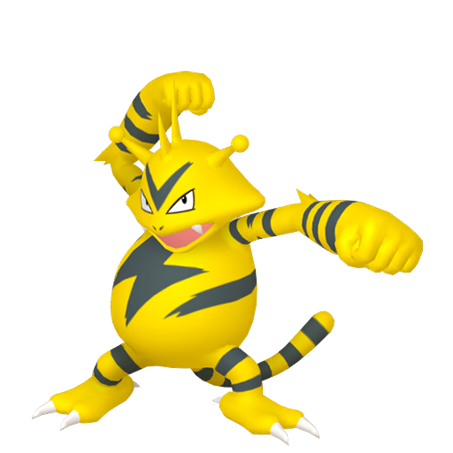

テラパゴス @たべのこし
ひかえめ 244-*-4-252-4-4
テラスタル 201-*-131-172-131-106
ステラ 266-*-131-200-131-106
テラクラスター トライアタック めいそう まもる
ガオガエン @ヨプのみ
わんぱく 44-0-180-*-76-0
201-135-146-*-120-80
フレアドライブ ねこだまし すてぜりふ てだすけ

ゴリランダー @とつげきチョッキ
いじっぱり 252-252-4-*-0-0
207-194-111-*-90-105
ウッドハンマー グラススライダー ねこだまし とんぼがえり
ウーラオス @こだわりスカーフ
いじっぱり 76-252-12-*-4-164
185-200-122-*-81-138
すいりゅうれんだ インファイト アイススピナー とんぼがえり
エレブー @しんかのきせき
ずぶとい 252-*-180-0-76-0
172-92-110-115-115-125
ボルトチェンジ フェイント このゆびとまれ ちょうはつ

ミミッキュ @ぼうじんゴーグル
いじっぱり 164-252-84-*-4-4
151-156-111-*-126-117
じゃれつく ちょうはつ おにび トリックルーム